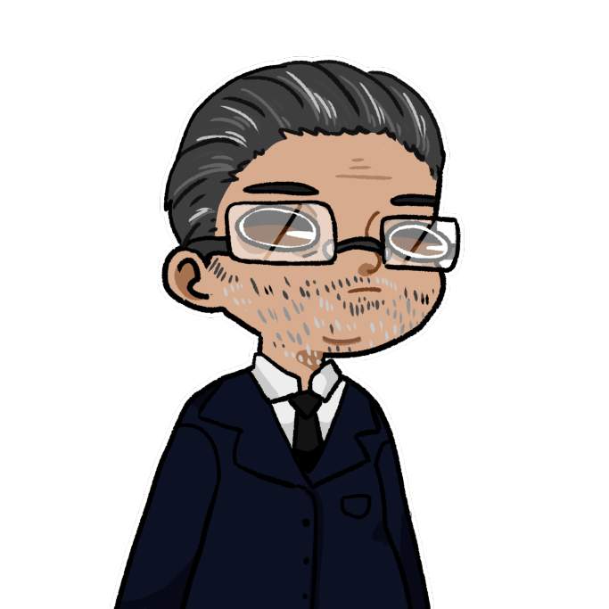
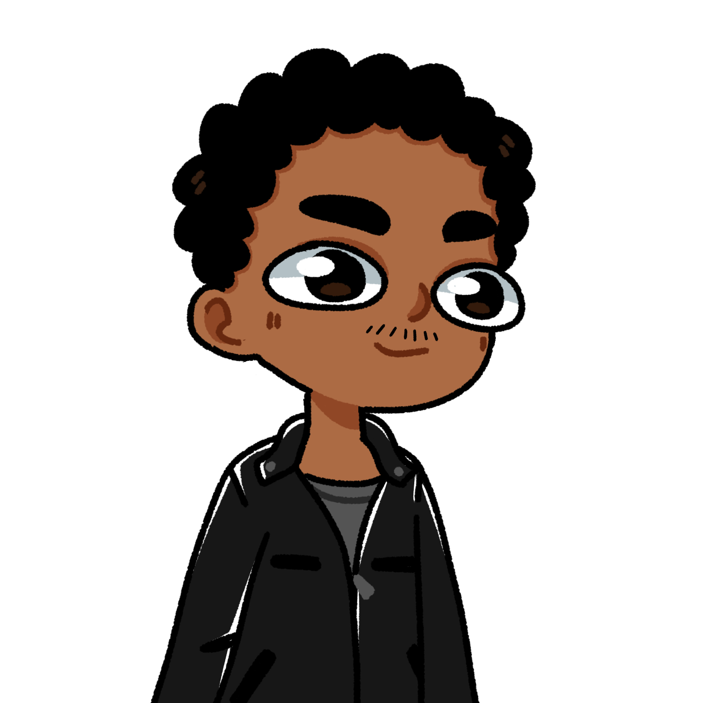
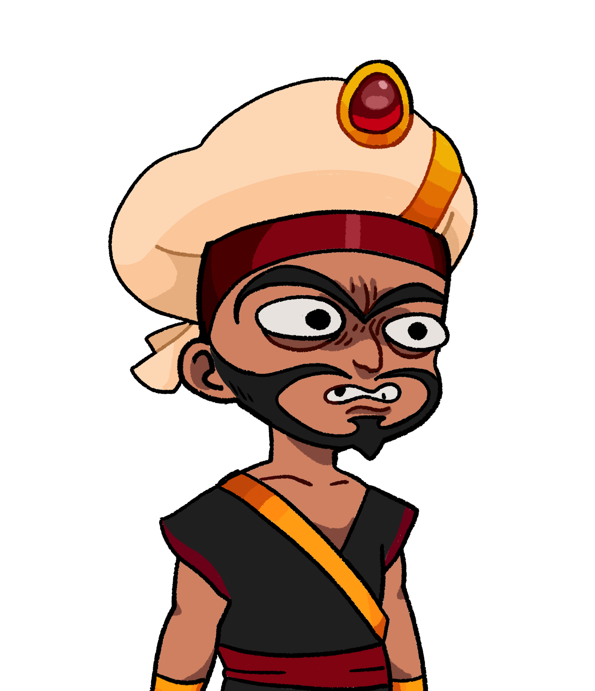

Aïe !
Quoi encore ?
Ivan : J’ai marché sur un caillou !
Tu fais chier à t’arrêter pour rien tout le temps ! À se rythme on y sera pas avant demain…
Ivan : C’était un gros caillou ! Je suis sur que ce genre de caillou on en trouve qu’ici.
Arrête de te plaindre et avance.
Ivan et Léopold marchaient à vive allure dans les allées d’un bazar marocain. Depuis que M. Archbold avait rendu le nombre de congés payés illimités, Ivan et Léopold partait une semaine sur deux à l’étranger, en voyage en amoureux. Et cette semaine justement, ils avaient décidé de partir au Maroc, profitant de l’occasion pour rendre visite à une mystérieuse personne cherchant à les rencontrer. Ils filaient entre les commerces, évitant les ânes qui bloquais régulièrement les rues, en fixant un morceau de papier qui leur étaient parvenus par la poste. Il s’agissait d’une adresse amenant à une ville marocaine reculé, expliquant sans doute pourquoi le cassos qui leur donnait rendez-vous n’avait pas de téléphone portable pour envoyer un SMS. Au bout de plusieurs heures de marche, ils arrivèrent devant une petite boutique vendant des statuettes de poubelles renversées. Léopold contemplait les différentes couleurs, Ivan les différentes tailles, quand tout à coup, un immense barbu se dressa devant eux.
Eh mais c’est…
Mais nan !
 Qu’es-ce que je peux faire pour vous les enfants ?
On est à la recherche de Samy, il nous a donné l’adresse de cette boutique. Vous ne l’avez pas vu ?
Si, cette boutique appartient à son père, et je crois bien l’avoir vu dans l’atelier à l’arrière.
Ah super ! On peux aller le voir ?
Non, c’est interdit au public. Mais je peux l’appeler si vous voulez.
 Pas la peine.
Samyyyyy !
Ivan se jeta sur Samy pour l’enlacer, malgré la semi protestation de ce dernier.
Tu m’a tellement manqué !
Oui oui toi aussi, mais tu peux me lâcher s’il te plaît ?
FOH
FAH
NnnNnn
Ils se mirent tout les 3 à danser en imitant des flamants roses.
Eh bien ! Quelle retrouvaille !
Venez avec moi, il faut que je vous montre un truc. J’ai une moto dans le gar…
 انت رهن الاعتقال! أراك !
Houla… qu’es-ce qu’il raconte lui ?
Courez !!
hein ? Mais pourq…
Tais-toi ! On t’a dit de courir !
Un groupe de garde armé de sabres arriva en trombe dans l’allée, au moment où Samy explosa le mur en bois de son garage, en fonçant en moto.
Montez !
Léopold attrapa Ivan, et sauta à l’arrière de la moto, partant à toute allure en direction du désert pendant que les gardes défoulaient leur rage en découpant Abdallah.
Alors, j’ai rien dit parce qu’on étaient pressés, mais pourquoi les soldats marocains ressemblent à ceux d’Aladin ? C’est un peu raciste non ?
Mais ferme t’a gueule !
NnnNnn
Après plusieurs heure de route, Samy s’arrêta dans une grotte cachée dans une dune.
On y est. Bienvenu chez moi !
La vache ! T’es si pauvre que ça ?
T’a internet ?
Il a déjà pas l’eau courante !
Je vous emmerde !
La grotte descendait légèrement, ressemblant à un énorme sac. Des étagères, armoires, et coffres, contenaient des Kidum de toute les formes, toute les couleurs, et toutes les tailles. Un énorme bureau trônait au fond, avec une vielle carte accrochée au dessus. Sur le bureau, était posé un bloc de mousse noir. Rectangulaire, il était creusé d’une fente dans la longueur. Samy le prix à deux main, et le leva comme s’il s’agissait d’une relique sacré.
Qu’es-ce que c’est ?
La réponse à toutes nos questions.